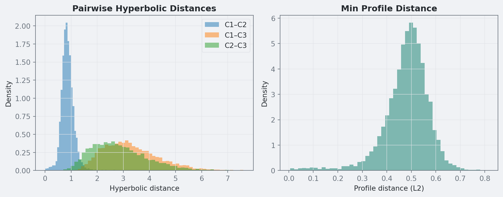

This post fits a 3-class latent class model where each class is a point on a restricted Poincare disk. The geometry gives a direct interpretation of class differences, and an ordering constraint on radii gives identification without post-hoc relabeling.
The goals are:
Fit an identified Bayesian LCA with interpretable latent coordinates.
Use a fast collapsed likelihood on sufficient statistics.
Verify that the geometric model recovers clear class separation.
Compare the fitted profiles to a standard poLCA baseline.
item_labels = ["Like to drink", "Hard liquor", "Morning drinking","Drinking at work", "Drink to get drunk", "Like taste","Drink to sleep", "Interferes w/ relationships", "Visit bars"]raw = np.loadtxt("data/lca1.csv", delimiter=",", dtype=int)Y = raw[:, 1:] # drop row IDN, J = Y.shapeprint(f"N = {N}, J = {J}")
N = 1000, J = 9
2.1 Descriptive Statistics
Show the code
means = Y.mean(axis=0)desc = pd.DataFrame({"Item": [f"j{j+1}"for j inrange(J)],"Description": item_labels,"Endorsement Rate": [f"{m:.1%}"for m in means]})desc
Item
Description
Endorsement Rate
0
j1
Like to drink
69.3%
1
j2
Hard liquor
29.1%
2
j3
Morning drinking
8.3%
3
j4
Drinking at work
9.0%
4
j5
Drink to get drunk
19.9%
5
j6
Like taste
28.2%
6
j7
Drink to sleep
13.9%
7
j8
Interferes w/ relationships
16.7%
8
j9
Visit bars
27.7%
Endorsement rates range from under 10% (morning drinking, drinking at work) to almost 70% (liking to drink). So the item set spans lower-risk and higher-risk behavior.
2.2 Sufficient Statistics
For computational speed, I collapse the \(N=1{,}000\) response vectors into \(P\) unique patterns with counts. This keeps the likelihood exact but avoids repeated evaluations of identical rows:
Show the code
patterns = [tuple(row) for row in Y]counts = Counter(patterns)unique =sorted(counts.keys())pat = np.array(unique, dtype=int)cnt = np.array([counts[p] for p in unique], dtype=int)P = pat.shape[0]print(f"{N} observations → {P} unique patterns")print(f"Most common: {cnt.max()} occurrences, {(cnt ==1).sum()} singletons")
Finite mixtures have label symmetry: with \(K\) classes there are \(K!\) equivalent posterior modes (Stephens 2000; Jasra, Holmes, and Stephens 2005). Without identifying structure, MCMC can jump across class permutations and make class summaries hard to interpret.
I use a geometric identification strategy: classes are embedded on a restricted Poincare disk (Nickel and Kiela 2017), and class labels are fixed by ordering radii.
3.2 Geometric Class Coordinates
Each class is a point on the open unit disk with polar coordinates \((r_k,\alpha_k)\), where \(r_k\in(0,1)\) and \(\alpha_k\in(0,\pi/2)\). Item directions are fixed and evenly spaced: \[
\varphi_j = \frac{\pi}{2} \cdot \frac{j-1}{J-1}, \qquad j = 1, \ldots, J
\] so all items lie in the same quadrant.
3.3 Item-Response Probabilities
The class-\(k\) endorsement probability for item \(j\) is \[
\theta_{kj} = \text{logit}^{-1}\!\Big(\alpha_j + \lambda_j \, r_k \cos(\alpha_k - \varphi_j)\Big)
\] where:
\(\alpha_j \in \mathbb{R}\) is the item baseline,
\(\lambda_j > 0\) is item discrimination,
\(r_k \cos(\alpha_k - \varphi_j)\) is the projection of class position onto item direction.
Because both angles are restricted to \([0,\pi/2]\), we have \(\cos(\alpha_k-\varphi_j)\ge 0\). Increasing radius therefore cannot lower an item below its baseline \(\text{logit}^{-1}(\alpha_j)\), which removes one common source of multimodality.
The two coordinates have a direct interpretation:
Radius \(r_k\): global severity (closer to 1 means higher overall propensity to endorse).
Angle \(\alpha_k\): profile direction (which subset of items gets the strongest lift).
3.4 Mixture Likelihood and Ordering Constraint
The collapsed-pattern likelihood is: \[
p(\mathbf{y}_p) = \sum_{k=1}^K \pi_k \prod_{j=1}^J \theta_{kj}^{y_{pj}} (1 - \theta_{kj})^{1 - y_{pj}}
\]
I break label symmetry with ordered radii: \[
\text{logit}(r_1) < \text{logit}(r_2) < \cdots < \text{logit}(r_K)
\] implemented using Stan’s ordered[K] type (Carpenter et al. 2017). Class 1 is always most central and class \(K\) is always most extreme.
3.5 BLAS-Accelerated Likelihood Evaluation
For each class, the Bernoulli log-probability for pattern \(\mathbf{y}_p\) can be written as: \[
\log p(\mathbf{y}_p \mid k) = \mathbf{y}_p^\top \boldsymbol{\eta}_k - \sum_{j=1}^J \log(1 + e^{\eta_{kj}})
\] where \(\eta_{kj} = \alpha_j + \lambda_j r_k \cos(\alpha_k - \varphi_j)\). This gives a fast three-step computation:
Precompute class offsets (once per leapfrog step): \[
c_k = -\sum_{j=1}^J \log(1 + e^{\eta_{kj}})
\]
diag = fit.diagnose()for line in diag.split('\n'):if line.strip():print(line)
Checking sampler transitions treedepth.
Treedepth satisfactory for all transitions.
Checking sampler transitions for divergences.
No divergent transitions found.
Checking E-BFMI - sampler transitions HMC potential energy.
E-BFMI satisfactory.
Rank-normalized split effective sample size satisfactory for all parameters.
Rank-normalized split R-hat values satisfactory for all parameters.
Processing complete, no problems detected.
Show the code
summary = fit.summary()targets = ([f'logit_r[{k}]'for k inrange(1, K+1)]+ [f'angle_raw[{k}]'for k inrange(1, K+1)]+ [f'alpha[{j}]'for j inrange(1, J+1)]+ [f'lam[{j}]'for j inrange(1, J+1)]+ [f'pi_w[{k}]'for k inrange(1, K+1)])conv_rows = []for p in targets:if p in summary.index: row = summary.loc[p] rhat = row.get('R_hat', row.get('Rhat', float('nan'))) ess = row.get('N_Eff', row.get('ESS_bulk', float('nan'))) conv_rows.append({"Parameter": p, "R-hat": f"{rhat:.3f}", "ESS": f"{ess:.0f}"})pd.DataFrame(conv_rows)
Parameter
R-hat
ESS
0
logit_r[1]
1.001
2795
1
logit_r[2]
1.001
3790
2
logit_r[3]
1.000
6969
3
angle_raw[1]
1.000
6867
4
angle_raw[2]
1.000
3700
5
angle_raw[3]
1.001
2964
6
alpha[1]
1.002
2174
7
alpha[2]
1.002
2578
8
alpha[3]
1.001
2992
9
alpha[4]
1.002
2811
10
alpha[5]
1.002
2372
11
alpha[6]
1.003
2699
12
alpha[7]
1.001
2695
13
alpha[8]
1.001
2777
14
alpha[9]
1.000
3950
15
lam[1]
1.000
4966
16
lam[2]
1.000
4260
17
lam[3]
1.001
3942
18
lam[4]
1.001
4262
19
lam[5]
1.000
4213
20
lam[6]
1.001
4376
21
lam[7]
1.001
4270
22
lam[8]
1.000
4400
23
lam[9]
1.001
2862
24
pi_w[1]
1.004
2529
25
pi_w[2]
1.003
2457
26
pi_w[3]
1.000
4338
In this run (seed = 42), diagnostics are clean: no divergences, no treedepth saturations, and rank-normalized \(\hat{R}\) values near 1 (maximum about 1.004 on class weights). Bulk ESS values are in the thousands.
The fitted classes are radially ordered with clear gaps: median radii are about \(r_1=0.05\), \(r_2=0.43\), and \(r_3=0.93\) (see the 90% intervals in the table). Class 3 is near the boundary, while Classes 1 and 2 are well separated low/moderate groups.
Figure 1: Posterior draws of latent class positions on the restricted Poincaré disk. Stars mark posterior means. Dashed lines show fixed item directions.
Figure 3: Posterior distributions of item baselines (α) and discriminations (λ).
6. Separation Diagnostics in Hyperbolic Space
The hyperbolic distance between two classes \(a\) and \(b\) on the Poincaré disk is (Nickel and Kiela 2017): \[
d_{\mathbb{H}}(z_a, z_b) = 2\,\operatorname{arctanh}\!\left(\frac{|z_a - z_b|}{|1 - \bar{z}_a z_b|}\right)
\] where \(z_k = r_k e^{i\alpha_k}\) is the complex representation of the class position.
6.1 Why This Metric Is Useful
Unlike Euclidean distance, hyperbolic distance grows quickly near the boundary (\(r \to 1\)). That gives three practical diagnostics:
Boundary classes can be strongly distinct. Large \(d_{\mathbb{H}}\) values near the rim indicate genuinely different high-severity profiles.
Central classes are naturally close to all others. A class near \(r\approx0\) tends to have small distance to every class because its profile is close to baseline.
The minimum pairwise distance is an adequacy check. Small \(\min d_{\mathbb{H}}\) suggests redundant classes; larger values support distinct classes for the chosen \(K\).
6.2 Hyperbolic vs Profile Distance
Profile distance (\(\|\boldsymbol{\theta}_a - \boldsymbol{\theta}_b\|_2\)) measures separation in observable item-probability space. Hyperbolic distance measures structural separation in latent space.
The two can disagree. For example, weak discrimination can make geometrically distinct classes look similar in profile space. Using both gives a better separation diagnosis than either metric alone.
Pairwise Hyperbolic Distances (posterior mean):
C1 C2 C3
C1 0.000 0.868 3.305
C2 0.868 0.000 2.842
C3 3.305 2.842 0.000
Min hyperbolic distance: 0.846 90% CI = [0.537, 1.253]
Min profile distance: 0.491 90% CI = [0.326, 0.605]
In this run, separation is strong: the minimum pairwise hyperbolic distance has posterior median 0.85 (90% interval [0.54, 1.25]), and the minimum profile distance has median 0.49 (90% interval [0.33, 0.61]).
Show the code
pairs = [(a, b) for a inrange(K) for b inrange(a+1, K)]fig, (ax1, ax2) = plt.subplots(1, 2, figsize=(10, 4))style_axes(ax1)style_axes(ax2)for a, b in pairs: ax1.hist(hyp_post[:, a, b], bins=50, alpha=0.5, label=f"C{a+1}–C{b+1}", density=True)ax1.set_xlabel("Hyperbolic distance")ax1.set_ylabel("Density")ax1.set_title("Pairwise Hyperbolic Distances", fontweight="bold")ax1.legend()ax2.hist(mpd_post, bins=50, alpha=0.5, color=blog["teal"], density=True)ax2.set_xlabel("Profile distance (L2)")ax2.set_ylabel("Density")ax2.set_title("Min Profile Distance", fontweight="bold")plt.tight_layout()plt.show()

Figure 4: Posterior distributions of pairwise hyperbolic distances and minimum profile distance.
7. Frequentist Cross-Check with poLCA
As a baseline, I fit the same \(K=3\) model with poLCA in R using many random starts (Linzer and Lewis 2011).
Show the code
if shutil.which("Rscript") isNone:raiseRuntimeError("Rscript is required for poLCA comparison but was not found on PATH.")r_code = textwrap.dedent(f"""suppressPackageStartupMessages(library(poLCA))set.seed(1234)raw <- read.csv("data/lca1.csv", header=FALSE)Y <- raw[, -1]colnames(Y) <- paste0("j", 1:ncol(Y))for (j in seq_along(Y)) Y[[j]] <- Y[[j]] + 1Lf <- as.formula(paste0("cbind(", paste(colnames(Y), collapse=","), ") ~ 1"))fit <- poLCA(f, data=Y, nclass={K}, nrep=100, maxiter=5000, tol=1e-10, verbose=FALSE, graphs=FALSE)cat(sprintf("LLIK %.12f\\n", fit$llik))cat(paste("PI", paste(fit$P, collapse=" "), sep=" "), "\\n")for (j in seq_len(ncol(Y))) {{ p <- fit$probs[[paste0("j", j)]][, 2] cat(paste0("J", j, " ", paste(p, collapse=" "), "\\n"))}}""")res = subprocess.run(["Rscript", "-e", r_code], check=True, capture_output=True, text=True)lines = [ln.strip() for ln in res.stdout.splitlines() if ln.strip()]lines = [ln for ln in lines if ln.startswith("LLIK") or ln.startswith("PI") or ln.startswith("J")]polca_llik =float(lines[0].split()[1])freq_pi = np.array([float(x) for x in lines[1].split()[1:]], dtype=float)freq_theta = np.zeros((K, J))for ln in lines[2:]: parts = ln.split() j =int(parts[0][1:]) -1 freq_theta[:, j] = np.array([float(x) for x in parts[1:]], dtype=float)freq_labels = [f"poLCA class {k+1}"for k inrange(K)]# Match classes: Bayes classes are ordered by radius (C1 = smallest r = most baseline)# We align classes by solving a global assignment problem (Hungarian algorithm)# on profile distance with a small class-proportion penalty.# Build comparison tableprint("="*80)print("Frequentist (poLCA) vs Bayesian Geometric")print("="*80)# Global class matchingfrom scipy.spatial.distance import cdistfrom scipy.optimize import linear_sum_assignmentmatch_weight_pi =0.25geo_cost = cdist(theta_mean, freq_theta) + match_weight_pi * np.abs(pi_mean[:, None] - freq_pi[None, :])geo_idx, freq_idx = linear_sum_assignment(geo_cost)geo_for_freq = {f: g for g, f inzip(geo_idx, freq_idx)}matched = [(geo_for_freq[f], f) for f inrange(K)] # ordered by poLCA class indexprint(f"\n{'':>25}"+"".join(f"{'j'+str(j+1):>7}"for j inrange(J)) +" π")print("-"*80)for fk inrange(K): bk = geo_for_freq[fk]print(f" poLCA {freq_labels[fk]:>18}"+"".join(f"{freq_theta[fk,j]:>7.3f}"for j inrange(J))+f" {freq_pi[fk]:.3f}")print(f" Geometric C{bk+1:>12}"+"".join(f"{theta_mean[bk,j]:>7.3f}"for j inrange(J))+f" {pi_mean[bk]:.3f}")print()print(f"poLCA log-likelihood: {polca_llik:.2f}")abs_diff = np.abs(theta_mean[[geo_for_freq[f] for f inrange(K)], :] - freq_theta)print(f"Mean absolute item-probability gap (matched classes): {abs_diff.mean():.3f}")print(f"Max absolute item-probability gap (matched classes): {abs_diff.max():.3f}")print("="*80)
Figure 5: Frequentist poLCA (gray) vs Bayesian geometric (color) item probabilities with 90% credible intervals.
8. What This Run Shows
NUTS diagnostics are strong (no divergences, \(\hat{R}\) near 1), so posterior summaries are stable.
Class separation is now clear in both latent space and profile space.
Matched class proportions are close to poLCA (Bayes about 0.51, 0.41, 0.09 vs poLCA about 0.56, 0.37, 0.08).
Remaining mismatch to poLCA is modest (mean absolute item-probability gap about 0.04; maximum about 0.19).
The practical result is that the restricted Poincare specification is now doing what it should: identifiable classes, interpretable geometry, and competitive fit on this dataset.
9. Optional Extension: Geometric Mean with Sparse Departures
The base model constrains all item-class logits to the cosine surface \[
\text{logit}(\theta_{kj}) = \alpha_j + \lambda_j r_k \cos(\alpha_k - \varphi_j).
\] This is interpretable, but it can be too rigid in some datasets.
The extension keeps the geometric mean structure and adds sparse deviations with a regularized horseshoe prior (Piironen and Vehtari 2017): \[
\text{logit}(\theta_{kj}) = \mu_{kj} + \delta_{kj}, \qquad
\delta_{kj} = z_{kj}\,\tau\,\tilde{\lambda}_{kj}
\] where \(\mu_{kj} = \alpha_j + \lambda_j r_k \cos(\alpha_k - \varphi_j)\) is the geometric prediction, \[
z_{kj}\sim\mathcal{N}(0,1),\quad
\lambda_{kj}\sim\mathcal{C}^+(0,1),\quad
\tau\sim\mathcal{C}^+(0,\tau_0),
\] and the regularized local scale is \[
\tilde{\lambda}_{kj}
=\sqrt{\frac{c^2\lambda_{kj}^2}{c^2+\tau^2\lambda_{kj}^2}},
\qquad c^2\sim\text{Inv-Gamma}\!\left(\frac{\nu}{2},\frac{\nu}{2}\right).
\] This prior shrinks most \(\delta_{kj}\) values toward zero and only allows larger departures where the pure geometry misses local structure.
Class identification still comes from ordered radii. Departures then act as diagnostics for item-class cells that need extra flexibility.
This extension is enabled in this document (#| eval: true for all departure chunks). Expect longer runtime because it fits a second model and runs additional diagnostics.
Figure 7: Three-way comparison: poLCA (gray), geometric (light), and departure model (saturated) item probabilities with 90% credible intervals.
Appendix: Stan Code
lca_poincare.stan
// lca_poincare.stan// LCA with Restricted Cosine Poincaré Disk + BLAS matmul likelihood// =================================================================//// theta[k,j] = inv_logit(alpha[j] + lam[j] * r[k] * cos(angle[k] - phi[j]))//// Items spread evenly at phi[j] = (π/2)(j-1)/(J-1) in [0, π/2].// Classes identified by ordered radii.//// Likelihood uses BLAS matmul: S = Y * η' avoids inner loop over items.data {int<lower=1> P; // unique response patternsint<lower=2> K; // latent classesint<lower=2> J; // items (≥2 for phi spacing)array[P, J] int<lower=0, upper=1> pattern; // unique binary patternsarray[P] int<lower=1> count; // count per pattern}transformed data {int N =sum(count);vector[J] phi;for (j in1:J) phi[j] = (pi() /2) * (j -1.0) / (J -1.0);// Real matrix version of pattern for BLAS matmulmatrix[P, J] Y;for (p in1:P)for (j in1:J) Y[p, j] = pattern[p, j];row_vector[J] rv =rep_row_vector(1.0, J);}parameters {ordered[K] logit_r; // ordered logit-radii → identifiabilityvector[K] angle_raw; // mapped to (0, pi/2) via scaled logisticvector[J] alpha; // item baselinesvector<lower=0>[J] lam; // item discriminationssimplex[K] pi_w; // mixing weights}transformed parameters {vector<lower=0, upper=1>[K] radii;vector<lower=0>[K] angles;matrix[K, J] logit_theta; // η[k,j] = alpha[j] + lam[j] * r[k] * cos(a[k] - phi[j])// matrix[K, J] theta;for (k in1:K) { radii[k] =inv_logit(logit_r[k]); angles[k] = (pi() /2) *inv_logit(angle_raw[k]); }for (k in1:K)for (j in1:J) { logit_theta[k, j] = alpha[j] + lam[j] * radii[k] *cos(angles[k] - phi[j]);// theta[k, j] = inv_logit(logit_theta[k, j]); }}model {// Priors logit_r ~ normal(0, 2); angle_raw ~ normal(0, 2); alpha ~ normal(0, 3); lam ~ normal(0, 3); // half-normal via <lower=0> pi_w ~ dirichlet(rep_vector(2.0, K));// --- fast marginalized mixture likelihood --- {// For each class k:// Σ_j log p(y_j | η_j,k)// = (y^T η_:,k) - Σ_j log(1+exp η_j,k)row_vector[K] sum_log1p = rv *log1p_exp(logit_theta'); // length Kvector[K] c =-sum_log1p';vector[K] log_nu =log(pi_w);// S[p,k] = Σ_j Y[p,j] * η[k,j] (BLAS matmul)matrix[P, K] S = Y * logit_theta';for (p in1:P)target+= count[p] *log_sum_exp(log_nu + (S[p]'+ c)); }// --- sufficient-statistics likelihood (loop version) ---// {// matrix[K, J] lt = log(theta);// matrix[K, J] lt1m = log1m(theta);//// for (p in 1:P) {// vector[K] lps;// for (k in 1:K) {// lps[k] = log(pi_w[k]);// for (j in 1:J)// lps[k] += pattern[p, j] == 1 ? lt[k, j] : lt1m[k, j];// }// target += count[p] * log_sum_exp(lps);// }// }}generated quantities {vector[P] log_lik;matrix[K, J] theta_free; // relaxed (unconstrained) item probsreal min_profile_dist;matrix[K, K] hyp_dist;real min_hyp_dist;// Per-pattern log-lik (BLAS version) + responsibilities for theta_free {row_vector[K] sum_log1p = rv *log1p_exp(logit_theta');vector[K] c =-sum_log1p';vector[K] log_nu =log(pi_w);matrix[P, K] S = Y * logit_theta';// log-likfor (p in1:P) log_lik[p] =log_sum_exp(log_nu + (S[p]'+ c));// Relaxed theta via iterated EM (seeded from geometric model)// Initial E-step uses geometric logit_theta; then iterate M→E→M... {// Seed theta_free from geometric modelmatrix[K, J] eta = logit_theta;for (em_iter in1:200) {// E-step: responsibilities from current etamatrix[P, K] W; {row_vector[K] slp = rv *log1p_exp(eta');vector[K] cc =-slp';matrix[P, K] SS = Y * eta';for (p in1:P) {vector[K] lp = log_nu + SS[p]'+ cc;real lse =log_sum_exp(lp);for (k in1:K) W[p, k] = count[p] *exp(lp[k] - lse); } }// M-step: theta_free = weighted sample meansmatrix[K, J] numer = W'* Y;for (k in1:K) {real denom =sum(W[, k]);for (j in1:J) { theta_free[k, j] = numer[k, j] / denom;// Update eta for next E-step (logit scale, clamp to avoid ±inf) eta[k, j] =log(fmax(theta_free[k, j], 1e-8))-log(fmax(1- theta_free[k, j], 1e-8)); } } } } }// Min pairwise profile distance min_profile_dist =positive_infinity();for (a in1:K)for (b in (a +1):K) {real d =0;for (j in1:J) d +=square(inv_logit(logit_theta[a, j]) -inv_logit(logit_theta[b, j]));if (sqrt(d) < min_profile_dist) min_profile_dist =sqrt(d); }// Pairwise hyperbolic distances on Poincaré diskfor (a in1:K) { hyp_dist[a, a] =0;for (b in (a +1):K) {real xa = radii[a] *cos(angles[a]);real ya = radii[a] *sin(angles[a]);real xb = radii[b] *cos(angles[b]);real yb = radii[b] *sin(angles[b]);real num =sqrt(square(xa - xb) +square(ya - yb));real re =1- (xa * xb + ya * yb);real im =-(xa * yb - ya * xb);real den =sqrt(square(re) +square(im)); hyp_dist[a, b] =2*atanh(fmin(num / den, 0.999)); hyp_dist[b, a] = hyp_dist[a, b]; } } min_hyp_dist =positive_infinity();for (a in1:K)for (b in (a +1):K)if (hyp_dist[a, b] < min_hyp_dist) min_hyp_dist = hyp_dist[a, b];}
References
Carpenter, Bob, Andrew Gelman, Matthew D. Hoffman, Daniel Lee, Ben Goodrich, Michael Betancourt, Marcus Brubaker, Jiqiang Guo, Peter Li, and Allen Riddell. 2017. “Stan: A Probabilistic Programming Language.”Journal of Statistical Software 76 (1): 1–32. https://doi.org/10.18637/jss.v076.i01.
Jasra, Ajay, Christopher C. Holmes, and David A. Stephens. 2005. “Markov Chain Monte Carlo Methods and the Label Switching Problem in Bayesian Mixture Modeling.”Statistical Science 20 (1): 50–67. https://doi.org/10.1214/088342305000000016.
Linzer, Drew A., and Jeffrey B. Lewis. 2011. “poLCA: An r Package for Polytomous Variable Latent Class Analysis.”Journal of Statistical Software 42 (10): 1–29. https://doi.org/10.18637/jss.v042.i10.
Nickel, Maximilian, and Douwe Kiela. 2017. “Poincare Embeddings for Learning Hierarchical Representations.” In Advances in Neural Information Processing Systems 30.
Piironen, Juho, and Aki Vehtari. 2017. “Sparsity Information and Regularization in the Horseshoe and Other Shrinkage Priors.”Electronic Journal of Statistics 11 (2): 5018–51. https://doi.org/10.1214/17-EJS1337SI.
Stephens, Matthew. 2000. “Dealing with Label Switching in Mixture Models.”Journal of the Royal Statistical Society Series B 62 (4): 795–809. https://doi.org/10.1111/1467-9868.00265.